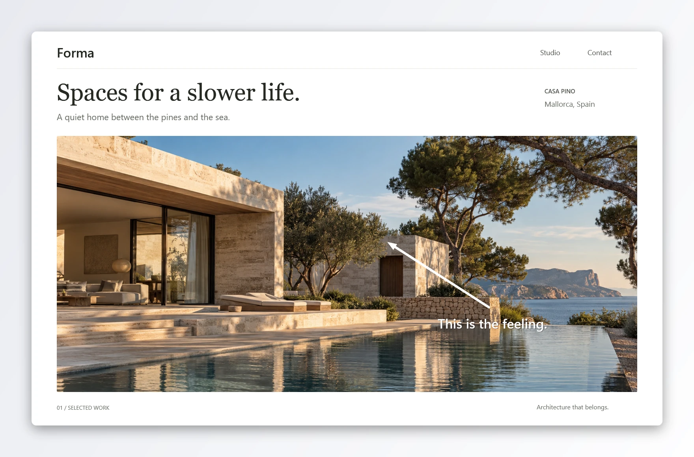
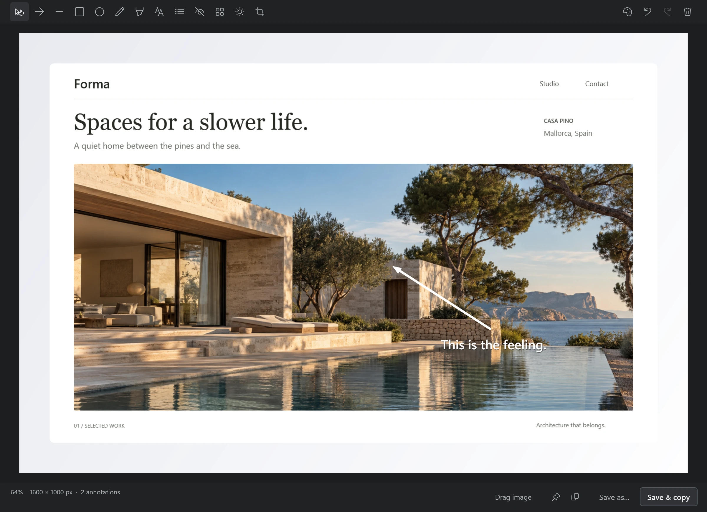
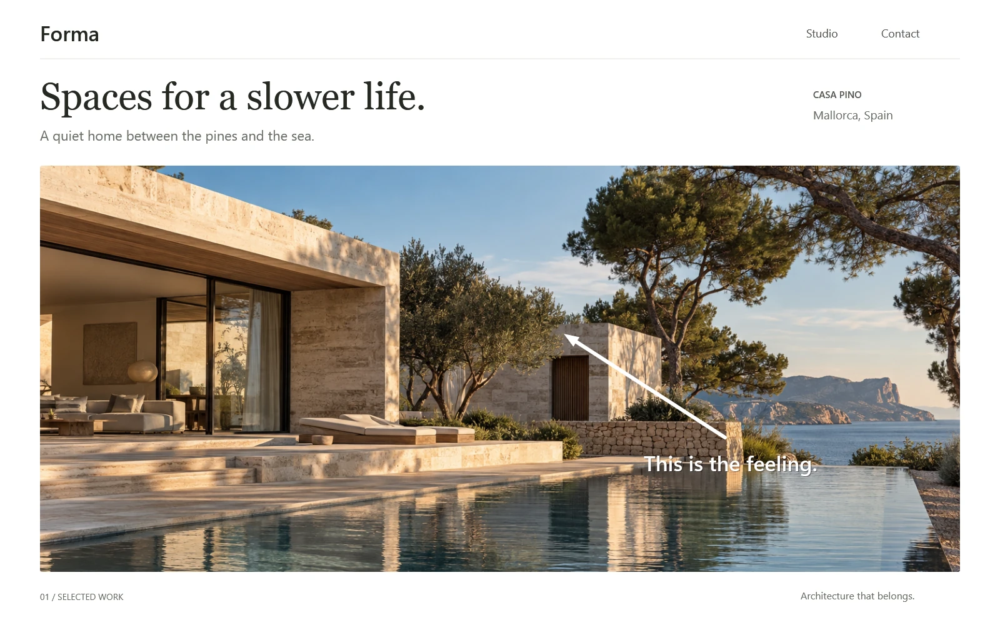

The whole story.
Capture scrolling pages,
from top to bottom on Windows.
FIELD NOTES ☰
A different
point of view.
Ideas worth looking at.
Room for
the details.

A FRESH TAKE ON SCREENSHOTS
Capture, annotate, record, and copy text.
All the little things you do every day.
Free software for Windows.
A native Mac preview, too.
Windows + macOS preview · GPLv3
Read the source. Make it yours. ↗
SMALL TOOL. FULL TOOLKIT.
Thoughtful tools. Fewer steps. A much clearer point.
Capture scrolling pages,
from top to bottom on Windows.
Ideas worth looking at.

Arrows, text, highlights, blur. Just what you need.

Copy words out of images.
Record what’s on your screen.
Pin a reference above your work.
A few of the ways to make your point. Explore all features →
RIGHT AT HOME ON YOUR DESKTOP
From the first capture
to the final detail.
Free to use, study, change, and share. No activation, account, or subscription.
Download Stillmark freeGPLv3 · Community-supported
Build with us →